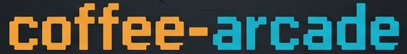

Loading Game... 0%
function openFullscreen() {
const container = document.querySelector("#unity-container");
if (container.requestFullscreen) {
container.requestFullscreen();
} else if (container.webkitRequestFullscreen) { /* Safari */
container.webkitRequestFullscreen();
} else if (container.msRequestFullscreen) { /* IE11 */
container.msRequestFullscreen();
}
}
// Optional: Hide the button when already in fullscreen
document.addEventListener('fullscreenchange', () => {
const btn = document.getElementById('fullscreen-button');
if (document.fullscreenElement) {
btn.style.visibility = 'hidden';
} else {
btn.style.visibility = 'visible';
}
});